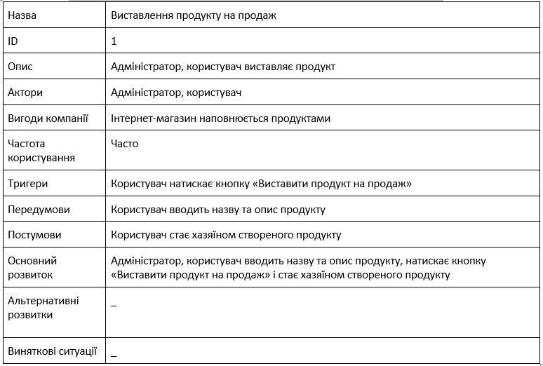
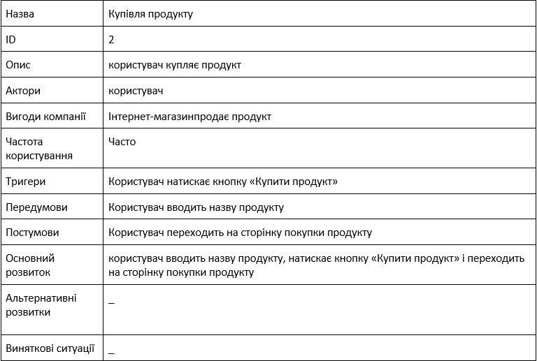
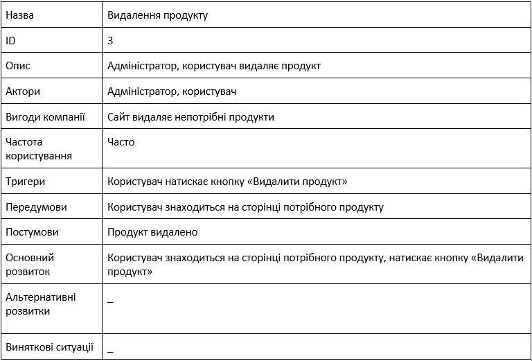
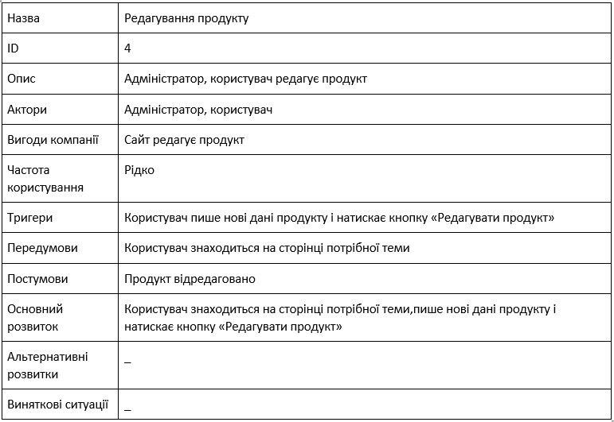
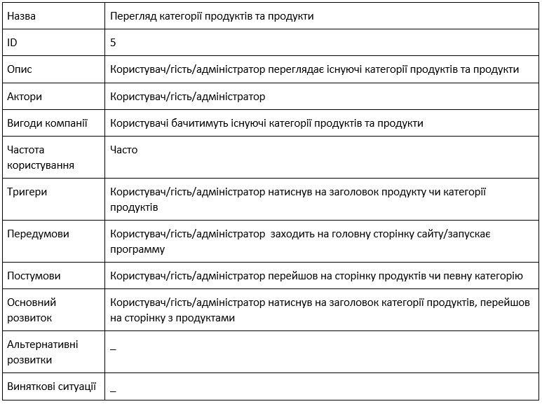
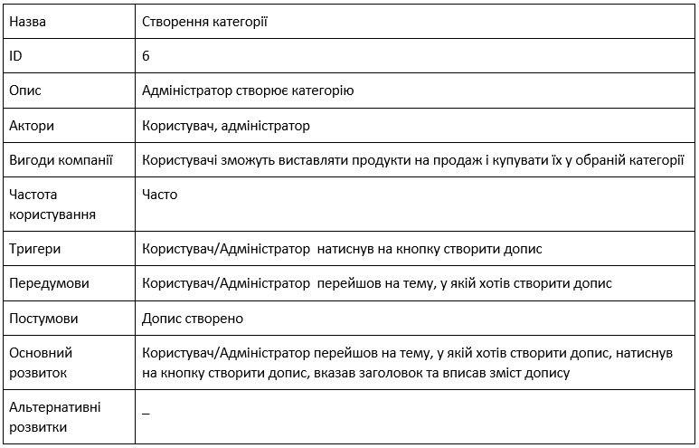
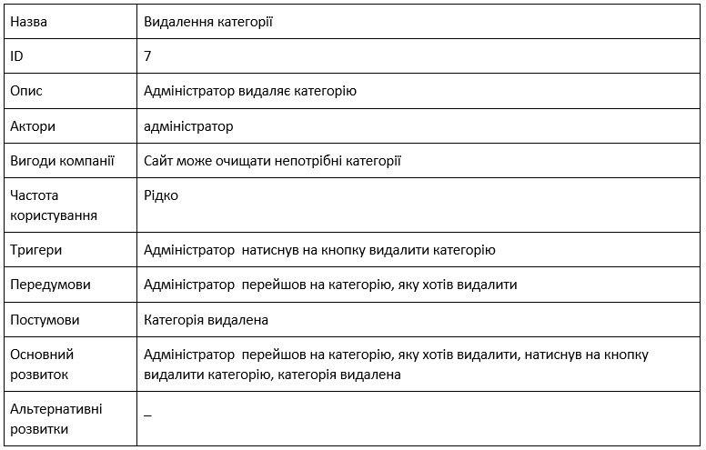
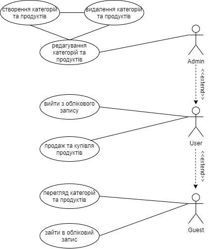

Метою роботи є створення інтернет магазину, основним функціоналом якої є купувати та виставляти на продаж різні товари. Для цього сайт повинен мати певний перелік властивостей та вирішувати такі задачі: 1. користувач повинен мати доступ до особистого аккаунту, з якого можна купувати та виставляти на продаж різні товари; 2. незареєстрований користувач повинен мати доступ до створення особистого аккаунту та можливість переглядати товари; Опис сценаріїв використання системи Детальні описи сценаріїв використання наведено у таблицях 2.1 – 2.7. Таблиця 2.1 – Сценарій використання «Виставлення продукту на продаж»  Таблиця 2.2 – Сценарій використання «Купівля продукту»  Таблиця 2.3 – Сценарій використання «Видалення продукту»  Таблиця 2.4 – Сценарій використання «Редагування продукту»  Таблиця 2.5 – Сценарій використання «Перегляд категорії продуктів та продукти»  Таблиця 2.6 – Сценарій використання «Створення категорії»  Таблиця 2.7 – Сценарій використання «Видалення категорії»  Діаграма прецедентів Акторами є користувачі системи: гість, користувач та адмін. Гість може: переглядати категорії та продукти, заходити або реєструвати обліковий запис; Користувач може: переглядати категорії та продукти, виходити з облікового запису, виставляти на продаж та купувати продукти; Адміністратор може: переглядати категорії та продукти, виходити з облікового запису, виставляти на продаж та купувати продукти, створювати, видаляти та редагувати категорії та продукти. 